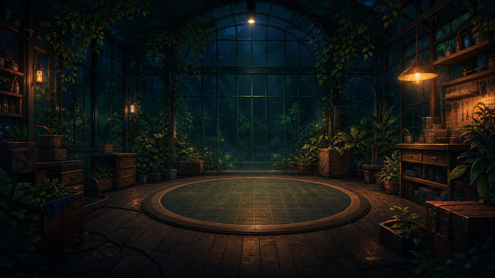

Sati Clip
Lifting movement awareness lab
Lifting Test Session
พร้อมเก็บข้อมูล .csv
Body Alignment 3D
ท่าทางแบบเรียลไทม์Upper (Sati-Nano)
gx0.8
gy0.2
gz0.4
°/sThigh (Movement)
gx0.4
gy0.1
gz0.2
°/sUpper Gyro (°/s)0.8
Thigh Gyro (°/s)0.4
Alignment Delta (°)0.5
Stability Score94.5
Vibration Events0.0
READYRecords: 0Elapsed: 0:00Sampling: ~10 HzLabel: stable_lift